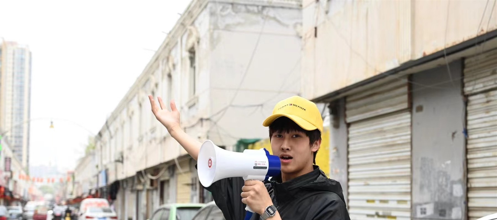

FIELD NOTES / 012026
李琪Liki
以身体、关系与现场为媒介，在日常秩序的缝隙中制造微小而持续的偏移。
Working through body, relation, and site to make slight, persistent shifts inside everyday orders.
PERFORMANCE / SOCIAL ARTXI'AN / CN
 BODY
BODYACTION
ARCHIVE
Editor's Selection / 04 Works
本期 行动 档案Selected Actions
四个项目从等待、重复、游戏和黏连出发，记录身体如何在具体的社会现场里感知、协商与行动。
Four projects begin with waiting, repetition, play, and stickiness: ways a body senses, negotiates, and acts inside a social site.


Field Index
从现场
进入作品Enter through
the site

Artist File / 2000—
小动作里的
大问题。Small actions,
large questions.
李琪关注身体与空间、个体与社会之间不断变化的关系。他的实践常从田野调查与现场实验开始，最终回到人和人如何在一个地方相遇。
Liki works with the changing relations between body and space, individual and society. His practice often begins with fieldwork and site experiments, then returns to how people meet in a place.